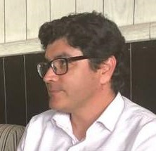

|  | Juan GarzaTelecommunications professional with more than 20 years of experience. |
I am a person who likes challenges, the novelty and that has kept me in leadership positions, in positions that dictate how to do things from a technology standpoint. I graduated with honors of excellence from the University and my preparation has been constant throughout my career. I am currently more involved in Internet topics, in the creation of metropolitan networks based on ethernet, dwdm, otn and in the selection of access equipment used with the end customer.
Sr. Leader of the IP Network. MCM Telecom. 2006 to early 2025.
I oversee the area that does the engineering of the metropolitan and interurban data networks. The
objective is to equip new sites, integrate them into the network and maintain enough capacity in the
equipment and links. My role involves introducing new technologies, testing and documenting them, among
these technologies are: Juniper routers, Huawei switches, Extreme switches, Fortinet firewalls,
optical transceivers. Another of my functions is to carry out, at a technical level, all the connections to
other Internet network (ISPs), cloud providers. I am the ipmaster of the MCM Telecom network (ASN 14178) and
the technical contact for LACNIC and IAR.
At the time, I led the effort to certify the point-to-point communication services, known as EPLs, with the
MEF organization (Metro Ethernet Forum) and which was obtained (MEF CE2.0 certification), this led me to
participate by invitation in one of its discussion forums organized in Mexico city.
Recent projects include the activation of a linear DWDM system from Mexico city up to Querétaro city with
Ribbon technology; implement transport services in the Juniper router network using configurations involving
protocols like VPLS, RSVP, MPLS, BGP; activation of a private DNS using bind9 and that serves as a database
for public IP addresses assigned to clients, the challenge was to rescue, from the configurations of the
network equipment, the IP assignments and that was achieved using python scripts. Another recent one was to
release a solution with Ubiquiti routers that established a VPN connection towards a central hub and this
allowed us to connect remote locations to the IP voice platforms in a secure way and thus connect several
telephones in each of these locations, however, the solution in a short time was replaced by tls encryption
on every IP phone.
I also participate in the creation of Alliances, the most recent one in which I got very directly involved
was in the selection of an integrator that supports the Managed Wi-Fi service, the technology used is
Ruckus and Extreme. Given the exhaustion of IPv4 addresses, my work team is even in charge of negotiating
and buying blocks of IPv4 addresses and transfer them to Mexico, and to MCM Telecom, from other countries.
And throughout these years I consider that my best achievement has been the creation, the engineering, of
the service-based network of MCM Telecom. It is a network mainly conformed of Huawei and Juniper equipment
that connects cities like Mexico, Monterrey and even Dallas.
Data Supervisor. MCM Telecom. 2000 to 2006.
As part of the Network Operations Center, I was in charge of coordinating the activity of data team
personnel, I made sure that network troubles were solved within the established time frames and that the new
services, new work orders, were connected and configured properly. I also proposed solutions to recurring
problems and tested the solutions proposed by the engineering area. I was in charge of the good performance
of the Internet services, of the voice over IP service (from the network perspective), of the metropolitan
transport services based on ethernet. Due to the frequent changes in the area I was responsible for keeping
the NOC personnel updated, well trained and I did this through weekly talks to them.
Among some other achievements is having selected and implemented the monitoring system, based on SNMP, to
manage all the network equipment. The system continues to be used along with some other newer systems.
Transport Supervisor. MCM Telecom. 1998 to 2000.
As part of the Network Operations Center, I was in charge of carrying out all the internal processes of my
area and supervise the performance of transport team engineers. The job was to manage the SDH transport
network equipment remotely and configure services over it. As a special task, I planned the growth of this
SDH network, which at the time led to the implementation of STM-16 nodes.
OSWF Communication Engineer. Alestra. 1996 to 1998.
I was part of the operations team (OSWF) of the Alestra Company (AT&T Telecommunication Services). My job
there was to keep the network 100% functional, for that, I had to run performance tests to the equipment
(central office, SDH/PDH transport and frame-relay equipment) and to the facilities. Also I supervised
radio link and DC power plant installations.
Professional Practitioner. CFE. 1995.
I worked to carry out professional practices in the control department of the hydroelectric dam Chicoasen in
Chiapas, Mexico. My job was to monitor and give maintenance to the rectifiers that created the excitation
field of the generators. I was there 2 months only but it was a great experience.
I like challenges, the novelty and that has led me to be a PADI certified diver for open waters, and from
time to time I go with my diving group to the sea to relieve stress.
And well, my passion for electronics has also led me to automate some processes in my home, and lately
play with an emerging, little-known, wireless technology called LoRaWAN, this technology works very well
with IoT sensors based on ESP32 and Arduino controller boards.
I also like to play with Raspberry boards and with one of them I implemented a web content filtering
solution at home that prevents my children, especially, from entering Internet sites that are not suitable
for them.